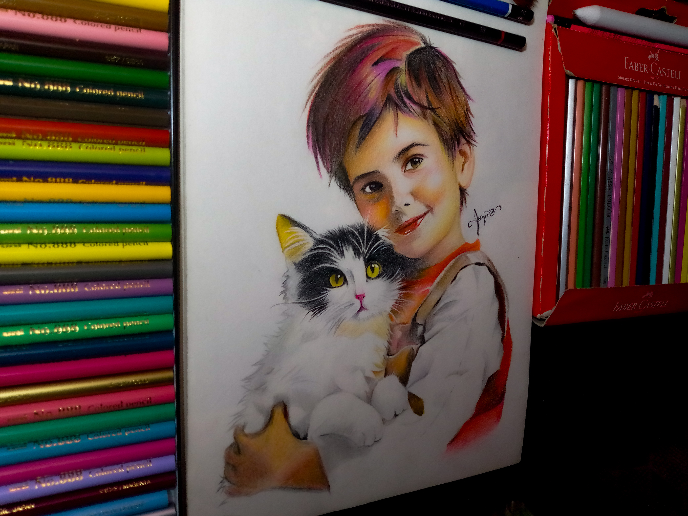
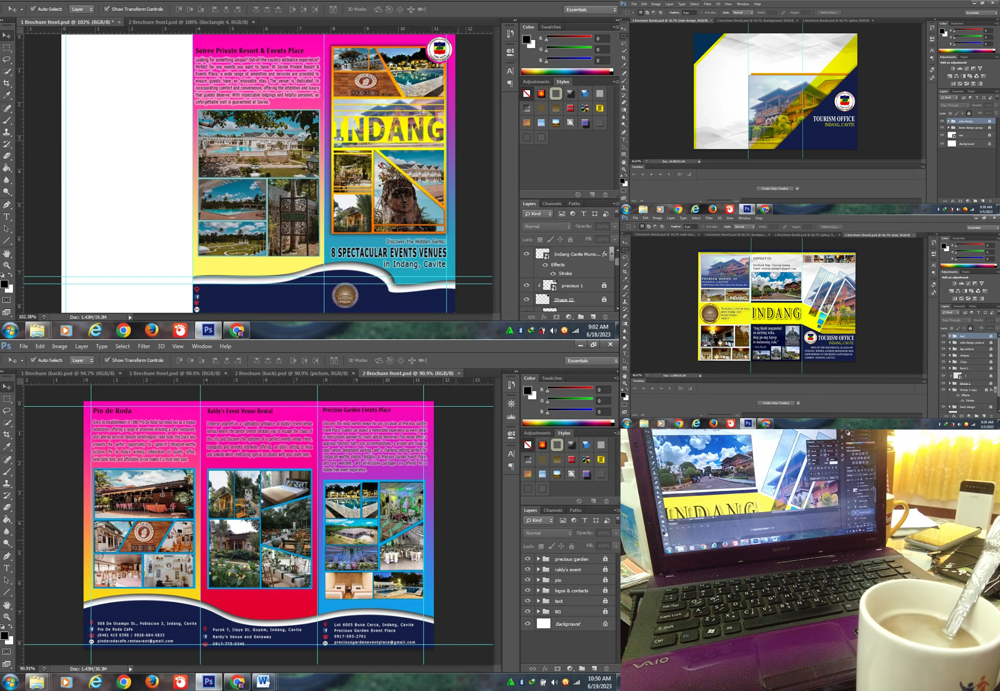
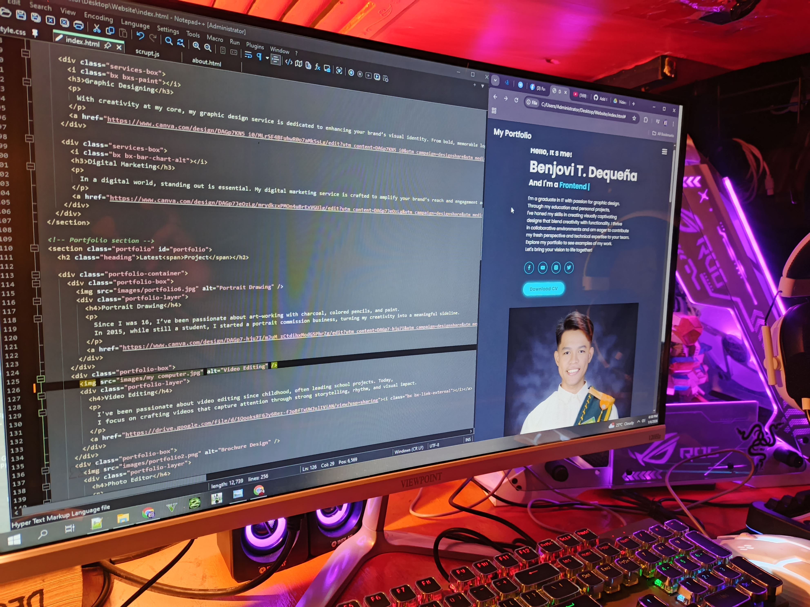

Latest Project





I'm a graduate in IT with passion for graphic design.
Through my education and personal projects,
I've honed my skills in creating visually captivating
designs that blend creativity with functionality. I thrive
in collaborative environments and am eager to contribute
my fresh perspective and technical expertise to your team.
Explore my portfolio to see examples of my work.
Let's bring your vision to life together!
Download CV CertificationsI'm an IT graduate with a deep passion for graphic design, artistry, photography, videography, and animation. Combining my technical expertise with a creative mindset, I specialize in crafting visually compelling designs that leave a lasting impression. Whether I'm behind the lens capturing breathtaking moments or bringing ideas to life through digital artwork, I'm committed to excellence and innovation. Let's collaborate and transform your vision into a captivating reality.
Read MoreWith storytelling at the heart of every frame, I craft professional video edits that transform raw footage into compelling narratives. Using Adobe Premiere Pro, I bring out the best in every scene—balancing rhythm, emotion, and clarity. Whether it’s for social media, business content, or cinematic projects, I make sure your message stands out through seamless, high-quality edits that captivate and connect with your audience.
Read MoreWith creativity at my core, my graphic design service is dedicated to enhancing your brand’s visual identity. From bold, memorable logos to eye-catching graphics, I design with purpose and precision. Each project is crafted to leave a lasting impression and communicate your message effectively. Let me bring your brand to life through thoughtful, innovative visuals that speak volumes.
Read MoreIn a digital world, standing out is essential. My digital marketing service is crafted to amplify your brand’s reach and engagement across multiple platforms. From strategic social media campaigns to targeted SEO approaches, I focus on connecting your message with the right audience in meaningful ways. Let me help drive your digital presence forward and open new doors for growth and visibility.
Read More

